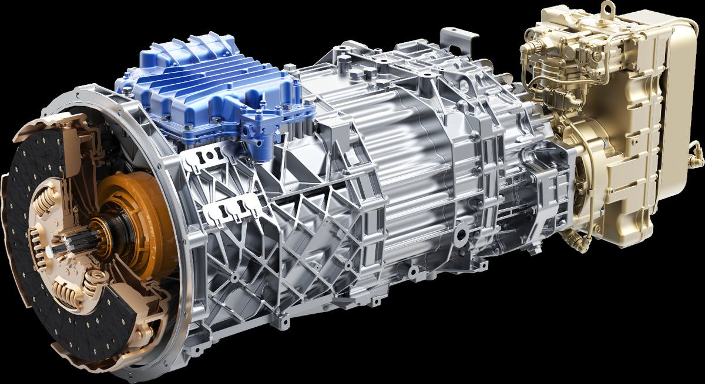
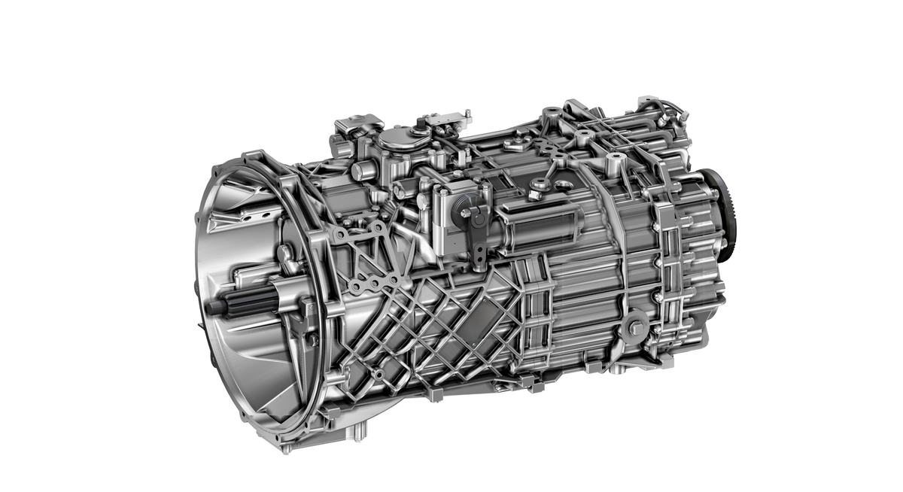
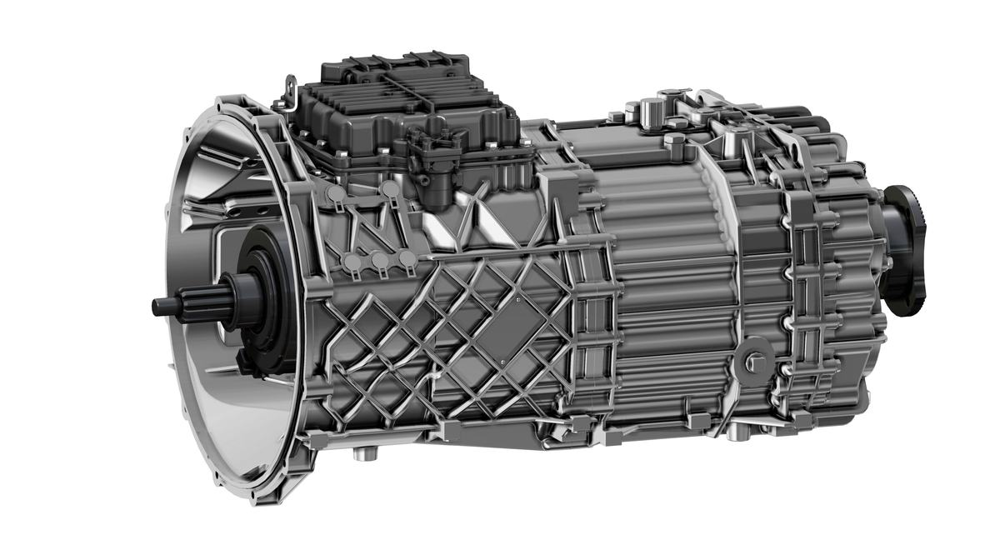

我国重型商用车保有量超过1200万辆，承担67.5%的货运量，是公路货运和军事运输的主体装备。重型商用车消耗成品油总量的50%，碳排放占汽车排放总量的54.3%，带来了严重的能源危机和环境压力。作为关键总成，变速器对整车动力性、经济性、可靠性具有决定性作用，其核心技术长期被国外封锁。团队攻克了商用车变速器构型创新、正向设计与高性能制造等重大技术难题，大幅提升了传动效率和使用寿命，研发的系列产品已大规模产业化。主要创新成果：
（1）发明大扭矩主副箱双中间轴式变速器新构型。首创主副箱双中间轴12挡变速器新构型，引领全球重卡变速器的发展；发明了多锥面大容量碳布同步器与自动换挡控制策略，大幅提高用户换挡舒适性与商用车燃油经济性。开发了变速器主动润滑-强制冷却集成系统，实现传动效率和功率密度显著提升。
（2）建立重型商用车变速器的正向设计方法。开发了变速器大数据云平台，首创适合中国工况的商用车变速器载荷谱；建立了“载荷谱-构型创新-精准设计-精益匹配”的变速器正向设计方法，实现变速器标准化与定制化的开发，使国产变速器的传动效率和使用寿命达到国际领先水平。
（3）突破重型商用车变速器高性能制造技术。发明齿轮、花键轴等关键零件精密成型技术，突破了深腔薄壁复杂铝合金壳体轻量化设计和高压压铸技术，实现变速器减重120kg；建立了重型商用车变速器行业首家“黑灯工厂”和“零碳工厂”，实现变速器绿色制造。
（4）创建商用车变速器基础数据库和技术服务平台。创建多种国产齿轮材料及工艺的S-N曲线数据库，建立商用车变速器国家级实验中心及行业技术服务平台，制定了齿轮承载能力、传动效率和变速器轻量化等国家标准。打破了重型商用车变速器正向研发基础数据缺失和测评能力薄弱的瓶颈。
项目共取得授权发明专利142项，登记软件著作权20项；编修订国家标准和团行标17项；发表科研论文52篇。创建了高性能变速器设计、制造、试验和产业化的技术体系，研制的系列化产品最大输入扭矩达3200Nm，综合传动效率达98.03%，B10寿命达180万公里。经中国机械工业联合会鉴定：“促进了我国高端商用车和高性能机械变速器的重大技术进步…双中间轴式主副箱12挡商用车变速器设计技术、汽车齿轮高性能制造技术达到国际领先水平”。
近五年产销420万台，收入627亿元，利税50亿元，重型变速器国内市场占有率超60%。每年节省柴油约229.6万吨，CO2减排715万吨。列装多种型号特种运输车辆，在维护国家安全中发挥了不可替代的作用。建立了国际先进的商用车变速器质量控制和性能测评平台、国家技术标准创新基地，为行业提供共性技术服务，促进了变速器产业链高质量发展，提升了中国品牌的全球影响力。
本项目以国家重大需求为牵引，在国家863计划和科技重大专项支持下，攻克了重型商用车变速器传动效率低、使用寿命短等重大技术难题，主要性能指标国际领先。形成了高性能变速器及其核心零部件成套技术正向研发和大规模产业化能力，开发出拥有自主知识产权的系列化产品，占据国内主要市场，实现了资本与技术输出，突显出中国品牌的全球影响力。项目的主要设计创新特点为：
创新点一：发明大扭矩主副箱双中间轴式变速器新构型。（该创新点授权国家发明专利26项、国际发明专利39项；登记软著3项，发表科研论文18篇。）
面对10~16挡商用车变速器构型与操控系统等核心技术被国外封锁，国内产品性能远远落后于国外竞品的突出问题，瞄准重型变速器进行原创性突破。首创多挡位大扭矩双中间轴主副箱式变速器新构型，发明了大容量同步器和先进的操纵机构，并提出主动润滑技术，使最大输入扭矩达3200Nm，综合传动效率达98.03%，主要性能指标国际领先。新构型自2008年大规模投产，连续十五年占据60%以上国内市场，保持着对国外竞品的技术优势。重型商用车变速器的卓越业绩，法士特获工信部首批“制造业单项冠军示范企业”称号。
（1）发明了大扭矩主副箱双中间轴12-16挡变速器新构型，引领全球重型商用车变速器技术发展
突破国产商用车9挡变速器技术依赖引进、10挡以上变速器被国外技术封锁，发明多挡位大扭矩主副箱双中间轴变速器新构型。发明的双中间轴式功率分流均载装置与配齿方法，消除了主传动轴齿轮的径向力，显著改善了轴承荷载。新构型变速器齿轮中心距减小20%，齿宽缩短40%，承载能力提高60%，功率密度显著提升。首创的新构型变速器产品，占据了国内重型商用车的主流市场。
（2）发明多锥面大容量碳布同步器和集成式操纵机构，开发出高效率变速器的挡位设计与换挡优化技术
发明多锥面大容量同步器和集成式操纵机构，解决了多挡位变速器选挡复杂、换挡卡滞的技术难题，换挡时长缩短40%~60%。突破同步器碳纤维布编织与高温胶膜技术，解决了大速差和高冲击下同步器易烧蚀、易脱落的瓶颈。首创“人-车-路-环境”四位一体的自动换挡控制策略，实现车况与驾驶员意图精确识别，提高了商用车动力性、经济性和换挡舒适性，节油3%~5%。提出基于路谱大数据的高效率变速器挡位定制化设计，通过提高长时占比挡位的传动效率，提前预警降低换挡频率，显著提升了商用车燃油经济性。
（3）提出高载荷齿轮传动精准润滑技术，开发出变速器主动润滑-强制冷却集成系统
提出高载荷变速器齿轮主动润滑技术，解决了飞溅润滑无法对不同挡位所需油量进行精准控制，造成油耗大、润滑效果差等难题。开发了9种变速器长效润滑油，换油周期由6万公里提升至50万公里。将工作油泵、热交换器、安全阀与过滤器等进行集成，开发出安全、带温控和过滤功能的变速器主动润滑-强制冷却集成系统，平均油温降低33%。攻克了云贵川、东北等严苛环境下润滑冷却系统频繁失效的技术难题，大幅提升了商用车变速器的传动效率和使用寿命。
创新点二：构建重型商用车变速器的正向设计方法。（该创新点授权国家发明专利24项；登记软件著作权9项，发表科研论文21篇。）
针对过去商用车变速器设计主要依赖经验和仿照，自主设计能力严重不足的问题，开发了大数据云平台和远程运维管理系统，编制出适合中国工况的重型商用车变速器载荷谱，重点突破齿轮、壳体等核心零部件精准设计技术，提出高性能重型商用车变速器“载荷谱-构型创新-精准设计-精益匹配”正向设计方法。实现变速器减重30%，功率密度达10.69Nm/kg，B10寿命达180万公里，主要性能指标国际领先，法士特2019年被工信部评为“工业产品绿色设计示范企业”。
（1）首创适合中国工况的重型商用车变速器载荷谱，为变速器正向设计提供基础数据支撑
建立适合中国工况的重型商用车变速器载荷谱，解决了载荷谱长期依赖进口、引进成本高、外来技术“水土不服”等突出问题。创建变速器大数据云平台和远程运维管理系统，定制开发线下采集终端，线上线下协同实现了坡度、经纬度、挡位、扭矩、油耗等重要车况数据精确采集。创建了4000多万公里的道路载荷数据库，编制高置信度载荷谱。提出基于损伤等效的载荷谱外推重构方法，构建变速器效率、疲劳与振动等多种载荷谱，填补了我国商用车变速器载荷谱的空白。
（2）提出商用车变速器核心零部件的精准设计技术，打破了长期制约国产变速器自主研发和升级换代的瓶颈
提出大螺旋角高重合度细高齿拓扑修形，齿轮承载能力大幅提高；提出变载荷下齿轮多轴疲劳寿命计算方法，研制出91.5mm和160mm标准中心距齿轮疲劳试验台及其测控软件，可模拟变速器工况实现齿轮疲劳寿命精确测量；发明比强度高的自冷抑振铝合金壳体轻量化设计技术，显著提高了变速器功率密度与使用寿命，重量减轻约120kg，减重比例达30%。在重型商用车变速器中推广应用，使用寿命满足安全运行里程要求，部分产品超过国外竞品。
（3）提出商用车变速器“载荷谱-构型创新-精准设计-精益匹配”正向设计方法，研发的系列产品已大规模产业化
基于自主开发的变速器大数据云平台与适合中国工况的变速器载荷谱，原创性地提出多挡位、大扭矩主副箱双中间轴式变速器新构型，攻克了核心零部件的精准设计技术；开发出设计数据库和竞品数据库，提出满足变速器定制化需求的精益匹配技术；形成了重型商用车变速器“载荷谱-构型创新-精准设计-精益匹配”正向设计方法。开发出的变速器系列产品，满足细分市场下各大主机厂多样化需求；产品的国内市场占有率超60%，连续15年世界产销第一。
创新点三：突破重型商用车变速器高性能制造技术（该创新点授权国家发明专利24项；登记软件著作权4项，发表科研论文10篇。）
瞄准变速器齿轮抗疲劳制造和高强轻质壳体压铸等关键技术进行攻关。发明了高强度齿轮冷挤压复合工艺，提出齿面弥散碳化物精准控制和抗扭曲精密磨削技术；攻克了深腔薄壁复杂铝合金壳体高压压铸技术；建立了重型商用车变速器生产首家“黑灯工厂”与“零碳工厂”，实现绿色化、数字化、精益化制造。齿轮疲劳寿命提高1倍，齿轮和壳体的生产效率大幅提升；建成齿轮精锻、铝合金壳体压铸等自动产线50多条，形成年产销变速器120万台的生产能力。批量供给沃尔沃、戴姆勒、比亚迪等国内外知名企业，形成了核心零部件的产业强链。法士特2016年被工信部评为“节能重卡变速器智能制造试点示范企业”。
（1）发明高强度齿轮冷挤压复合工艺与抗扭曲精密磨削技术，显著提高了齿轮抗疲劳能力
发明高强度齿轮冷挤压复合工艺，相比常规锻坯“滚齿+剃齿”工艺，材料利用率提升15%，生产效率提高80%，齿轮疲劳寿命提升50%。开发齿轮高效滚磨光整技术，显著降低齿面粗糙度，使变速器传动效率最高提升1.25%。提出齿轮弥散碳化物精准控制与抗扭曲精密磨削技术，实现碳化物颗粒的细化与弥散分布，齿面扭曲量由±20μm减小到±5μm，改善偏载使齿轮承载能力大幅提升。
（2）发明深腔薄壁复杂铝合金壳体高压压铸成形技术，实现了轻量化变速器壳体的高质高效制造
发明了深腔薄壁复杂铝合金壳体高压压铸技术，攻克了变速器壳体铸件存在多孔性缺陷、疲劳强度低等难题。建立壳体压铸充型和凝固过程的计算模型，开发壳体局部加压、辅助抽真空与多弧离子镀等关键技术，有效解决了压铸壳体缩孔缺陷、气孔缺陷与铸件粘模问题。新建铝合金壳体高压压铸自动化产线，实现了高强轻质壳体大规模量产，毛坯合格率大幅提升，生产效率提高25%。
（3）建立行业首家重型商用车变速器智慧工厂，以智能制造促进数字化转型和高质量发展
构建由智能装备、精密测量、全面自动化、核心工艺、人机工程等要素组成的商用车变速器先进制造系统；打通上下游数据壁垒，实现“人机料法环测能”全业务数字化；形成了数字孪生、万物互联、黑灯生产、数据闭环、智能决策和绿色低碳六大核心技术，建立法士特智慧工厂。创建无人干预“黑灯工厂”，生产效率提高72%。突破能源辅料低碳化、生产环境友好化、资源利用高效化与废气处理无害化等关键技术，建立国内变速器首家“零碳工厂”，能效利用率>95%。
创新点四：创建商用车变速器基础数据库和技术服务平台（该创新点授权国家发明专利29项，编修国标/行团标17项，登记软著4项，发表科研论文3篇。）
突破重卡变速器新构型及其关键设计制造技术的同时，创建变速器基础数据库与技术服务平台。基于大数据云平台和变速器载荷谱，开发出十余种国产齿轮材料，构建不同材料及工艺的齿轮S-N曲线数据库。建立了由工业产品质量控制和技术评估实验室、国家技术标准创新基地等组成的国家级科技创新平台，制定了变速器及其核心零部件的性能测评与标准体系。基础数据库和技术服务平台的完善，促进了商用车变速器的重大技术进步与产业化应用，为持续引领市场发展提供强劲动力。
（1）开发出高性能汽车齿轮材料，创建多种国产材料及工艺的齿轮S-N曲线数据库
针对国产齿轮材料品质差、进口材料问题多和汽车齿轮S-N曲线数量少、精度低的突出问题，自主研发了10余种汽车齿轮材料，突破了常规齿轮钢纯净度低、淬透性差与热处理变形大的技术难题，疲劳寿命提高2倍。建立了材料物化属性与热处理质量等数据库，制定了与国际标准接轨的齿轮材料企业标准9项。完成了4200多个疲劳寿命试验点，创建了多种国产材料及工艺的汽车齿轮S-N曲线数据库，为高性能变速器齿轮正向设计和疲劳寿命评估提供重要的基础数据。
（2）创建重型商用车变速器及其核心零部件的性能测评与设计标准体系，为高性能变速器自主研发提供有力保障
建成了拥有100多台套大型试验设备的商用车变速器国家级综合实验中心，具备CNAS认证资质。发明了功率分流传动系统均载测试装置、变速器零部件疲劳寿命试验台；研制出3200Nm变速器综合性能试验台、-45℃~150℃高低温交变湿热试验台等。提出基于载荷谱的变速器传动效率、换挡策略等试验方法；基于三高路试（高寒、高原、高温）与系统标定，提出极端环境下变速器性能评估方法。编修订相关的国家标准5项、行业与团体标准5项。性能评估与标准体系的创建，为重卡变速器的自主研发与技术创新提供了强大助力。
（3）建立重型商用车变速器共性技术服务平台，助推行业技术升级与高质量发展
建立了国家级工业设计中心、工业产品质量控制和技术评价实验室（工信部）和产业技术基础攻关服务平台（工信部），加强变速器产品质量检验、技术测评能力。创建了“先进制造工艺及关键零部件”国家技术标准创新基地，促进创新成果转化和技术标准建设。创建了一支集科学研究与工程技术应用为一体的产学研用协同创新团队，建成部省级创新团队5个。为上下游企业提供产品研发、质量检测和技术咨询等服务，带动了整个行业的技术升级和产品换代。促进了变速器产业链高质量发展与核心技术完全可控，提升了自主品牌的全球竞争力。



重卡高效率长寿命变速器,打破国外封锁
关键总成
重卡承担 67.5% 货运量,直接关系物流与运输者
1200 万辆重卡保有量,节能减排市场巨大
商用车核心总成国产化样本